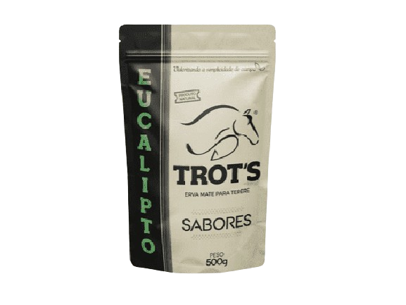

Sabores da erva mate
Bastante consumida na forma de chimarrão e chá, em especial nos estados do Sul do país ela ganhou diversas versões com sabores diferentes. dentre elas:
Erva Mate menta e boldo
o mais clássico sabor se assemelha a uma bala de menta ardida
Sabor tradicional
amado por muitos e odiado por outro é o sabor mais convectional
MEGA MENTA
sabor extra forte de menta
Sabor cereja,
com a fruta seca transformada em sabor,
em outra marcas adicionam sabores artificias o
que nao é o caso aqui
Sabor de limão
sendo desta marca também sabor natural de limão
parecendo que foi exprimido um
limão.
Até sabor eucalipto tem.
